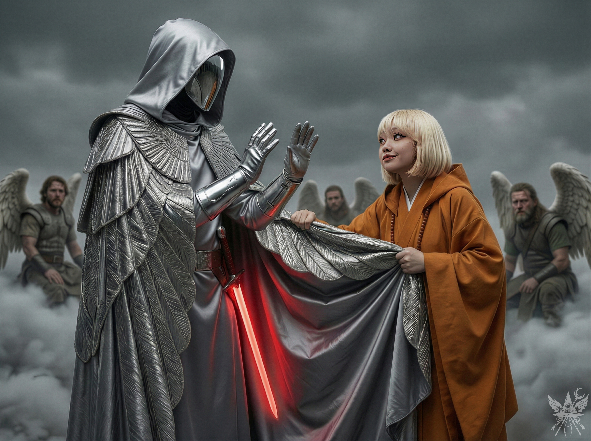
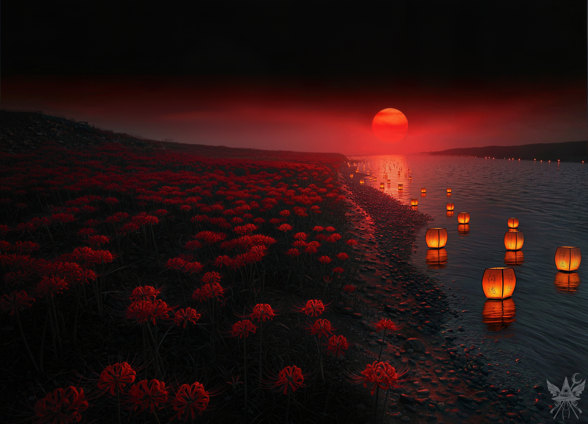
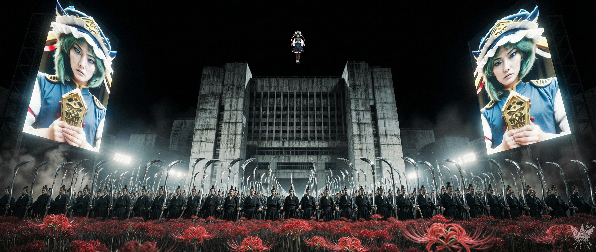
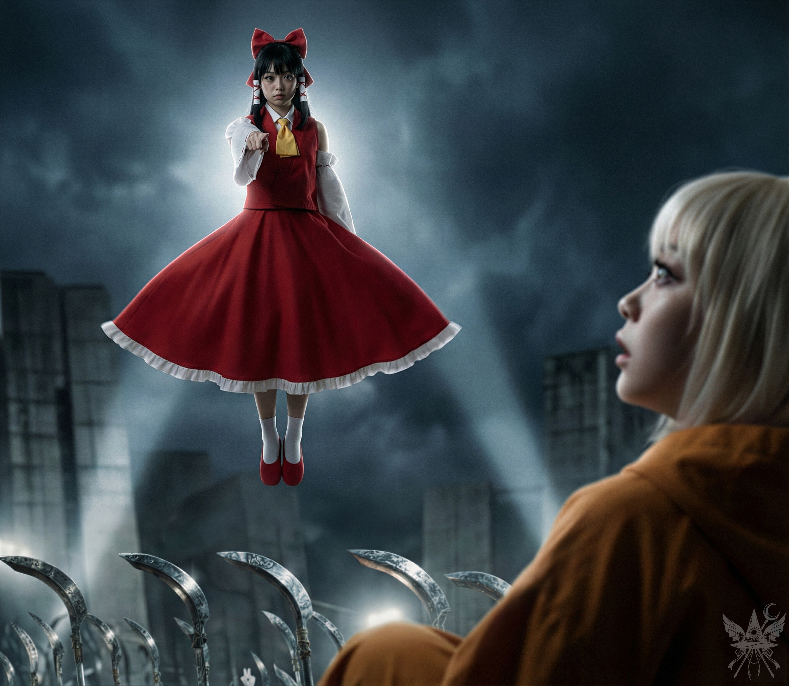

「カミラ、ソクラテスを絞め殺すのはよして。エレンの飼い猫でしょう？ 彼女の気持ちも考えてあげないと」
（カナは本当に短気だ。優秀なスパイのくせに、カッとなるせいでせっかくの計画を何度も台無しにしてきた。まあ、今回は私がついているから大丈夫だろうけれど……私も昔は似たようなものだった。いや、もっとひどかったか。この戦いを生き延びたら、カナも少しは落ち着くかしら）
顔をしかめて睨みつけてくる相棒に対し、傍らで見守る創造主たちに聞こえるよう、あえて少し声を張って続ける。
「とはいえ、この猫はカミラの命を狙っていたのよ。もう信用できないわ。戦いが終わるまでは、しっかり縛っておきましょう」
カナは唇を噛み締め、小さく舌打ちをした。
「そうね。ソクラテスは……エレンにとって大切な猫だし。ちっ、またメデアの言う通りか。仕方ないわね」
首を締め上げられた状態から、瀕死のソクラテスがか細い声を漏らす。
「お前たちは……まだ分かっていないニャ……俺の真の……！」
言葉を紡ぎ終えるより早く、カナが華麗な刺繍の施されたハンカチを強引に口へ押し込んだ。
「シーッ、おとなしくしていなさい、猫ちゃん」
布で後ろ足を縛り上げるのを、絹の帯を支えて手伝う。背後では巨大な龍が荒い息と共に白煙を吐き出し、キクリが静かに状況を見守っていた。上空で待機する死神の部隊も、絶対者の判断を待つように沈黙を保っている。
拘束を終えると、カナは嗜虐的な笑みを浮かべて囁いた。
「お腹が空いたら、哺乳瓶でミルクでもあげましょうかね。ふふっ」
身動きの取れない猫を巨大な砲塔へ縛り付け、背後の龍神へ向き直る。
「龍神様、お待たせいたしました。風太様は彼岸に囚われておりますが、居場所は分かっております。すぐにでも……」
その時、ドスンという鈍い衝撃が走り、足元の無骨な鉄塊が大きく揺れた。傾いた砲塔へ振り返ると、縛り付けていたはずの絹の帯が千切れ飛んでいる。
（逃げた！）
「逃がさないで！」
カナが装甲から飛び降り、ポータルを目指して駆け出す獣の背中を追う。メデアも即座に後を追った。奴はすでにピューマの姿へと戻り、夢幻世界へのポータルへ一直線に突進している。だが、その行く手には白翼の軍勢が壁のように立ちはだかっていた。
「シューニャ！ 捕まえて！」
灰色の仮面の指揮官へ向かって鋭く叫ぶ。
ポータルの手前で抜刀したシューニャが立ち塞がり、そこへカナの放つ水色の弾幕が獣の退路を断つように展開した。挟み撃ちにされたピューマは一瞬だけ後ずさりし――直後、自らシューニャへ向かって跳躍した。魔力弾が炸裂し、灰色の煙が視界を覆い隠す。
爆風が晴れた後、そこに立っていたのは、不吉な赤い光を放つ剣を握りしめたまま、呆然と立ち尽くすシューニャの姿だった。
「……殺した？」
足元の雲海には、血を滲ませたソクラテスの骸が、まるで糸の切れた精巧な人形のように横たわっている。
シューニャは、恐怖に震えるか細い声で、やっとのことで言葉を絞り出した。
「違う……！ 私は……ただそこにいただけよ……！ 勝手に飛び込んできたの！ 私は、何もしてない……！」
「……嘘はついてないわね」
静かに事実を告げると、彼女はすがるように繰り返した。
「信じて！ 本当に何もしてない……！」
「開発者さん、詰めが甘かったようね。お気の毒」
冷ややかに呟き、リュックサックを足元に置いて骸を死神の衣服の切れ端で包み込む。カナは眉をひそめて死骸を見下ろした。
「……本当に事故？ わざと剣に飛び込んだのかも。データベースからも削除されていたし……。もしかして、猫の体を捨てて、別の世界にでも行ったのかしら」
そこへ、状況を察知した天使たちが駆け寄ってくる。カナは瞬時に表情を切り替え、大袈裟な悲鳴を上げた。
「シューニャが私たちの大切なペットを殺した！ 絶対に許さないわ！ みんなにシューニャの正体をバラしてやる！」
言いながら頭上へ手を伸ばすが、帽子はリュックサックの中だ。
追い詰められたシューニャは、赤く発光する剣先をカナへ突きつけ、低い声で威嚇した。
「ふざけるな！ いい加減にしろ！」
カナは素早く刃の軌道をかわし、周囲の天使たちへ向かって声を張り上げる。
「天使たちよ！ シューニャの正体を知りたい……？」
どんよりと垂れ込める暗雲の下、氷のような脅迫が場を支配した。圧倒的な武力を誇るはずの指揮官の胸ぐらを、カナの細い腕が乱暴に掴み上げる。不吉な赤い光を放つ刃が真下にあるというのに、カナはたじろぐどころか、相手の急所を完全に掌握した絶対的な優位性を誇示するように、冷徹な笑みを浮かべていた。重苦しい静寂の中、主の危機を前にしても私兵たちは動くことができず、ただ息を呑んで事態を傍観している。力関係は完全に逆転していた。

（まさか、ここで本当に全部バラすつもり？ 天使の軍事力が必要なこの状況で、馬鹿じゃないの……！）
張り詰めた空気の中、天子はゆっくりと剣を下ろし、すべてを諦めたように吐き捨てた。
「……わかったわ。好きにしなさい。このクソポルターガイスト……！」
主導権を握ったカナは、天使たちへ向かって高らかに宣言する。
「この猫の仇は討たねばならない。聖なる血は、敵の血でしか償えないわ！ 天使たちよ、使命を思い出しなさい！ 永遠に空を舞う栄光、神への忠誠、そしてあなたたち自身の救済のために！」
（永遠に空を舞うって……さすがカナ。口から出まかせもここまでくると芸術だわ）
「シューニャ様、どういう意味ですか？」
戸惑う天使の一人に、天子は押し殺した声で命じた。
「休憩は終わりよ。新たな戦いが待っている。軍勢を集めなさい！」
メデアたちが再び魔界の兵器のもとへ戻ると、キクリが新たなポータルを開こうとしていた。鏡面のように滑らかな空間の歪みが、大質量の龍と巨大な兵器さえも飲み込めるほどに、円状に大きく広がっていく。
その頃、戦いが小康状態に陥った龍神島では、龍宮から姿を現した侍女が主へ歩み寄っていた。
「龍神様、ご無事ですか？ 龍宮へお戻りください」
満身創痍の巨大な龍は、荒い息を吐きながら威厳に満ちた声で返す。
「今は無理だ。先に息子を助けねばならん。皆、地下シェルターへ避難せよ」
「しかし……お客様が……急に倒れられました……」
「客だと？ 誰のことだ？」
「幻想郷の巫女、東風谷早苗様です。つい先ほどまでお相手をしていたのですが……まるで魂が抜けたようで……意識がありません」
咎められるのを恐れるように、侍女は深々と頭を下げた。
空を覆う紫の亀裂から吹き下ろす風の中、キクリの指先が空間を完全に切り裂き、彼岸へと繋がる巨大な門が口を開けた。ちぎれた雲が猛烈な勢いで吸い込まれていく。カナの指示通り、天使の軍勢は門の脇に整列し、龍神は侍女たちに早苗の介抱を命じた。メデアは役目を終えたソクラテスの骸を彼女たちに託す。
再び巨大な鉄塊に乗り込み、進軍が始まる。すべての生き物の運命を左右する、死の国・彼岸への侵攻だった。
圧倒的な質量の龍が彼岸のポータルへ飛び込み、天使の軍勢がそれに続く。重い翼が風を裂き、舞い散る白い羽根が冷たい空気を撫でていく。自走砲に乗った最後尾で振り返ると、キクリがポータルに手をかざし、意識を集中させていた。平和維持軍が異変に気づくより早く、次元の裂け目はゆっくりと縫い合わされるように閉じていく。すべてを終えた創造主は、静かな慈愛を湛えた微笑みをこちらへ向け、ゆっくりと一行の最後尾へと加わった。

生者は死の国に足を踏み入れた。波一つない水面と揺れない彼岸花が、生命活動が完全に停止した極度の無風と静寂を突きつけてくる。自走砲の駆動音や侵攻の喧騒すら飲み込んでしまうような、圧倒的で冷たい静けさ。西に傾いた巨大な赤い太陽が水面を照らし、果てしなく続く暗黒の水面には、無数の灯籠がオレンジ色の火影を揺らしていた。湿った冷たい土の匂いと、底冷えする水の匂いが立ち昇ってくる。
（昨日の日没頃に一度変身したから、いつでもできる……）
巨大な車輪が容赦なく深紅の花々を踏み躙り、バリバリと痛ましい音を立てる。まるで無残に散る花々の悲鳴のようだった。体力温存のために地を歩く白翼の天使たちも、その上を静かに進んでいく。上空では、絶対的な質量を持つ龍が悠然と舞い、静かに地平線の先を見据えていた。
揺れる無骨な装甲の上で、カナがぴったりと寄り添い、不安げに呟いた。
「嫌な予感がするわ。創造主も天使の軍勢も、この兵器もあるのに、この胸騒ぎは何？」
「わからないわ。ただの勘……。自分が死ぬべき存在なのかも分からなくて……。死んだらどうなるの？ 私という存在が消えるなんて、想像つかない……」
（カナにしては珍しく弱気だ。だが、感傷に浸っている猶予はない）
「そんなことを考えている暇があったら、具体的な作戦を練りましょう」
冷ややかに促すと、カナは薄く微笑んで本来の冷酷なトーンへ戻る。
「そうね。閻魔を全員始末してからサーバーを破壊しないと。後始末が面倒くさいわ」
「口で言うのは簡単だけれど……。サーバーは議事堂別館の地下にあって、連中は色んな建物に散らばっているはずよ」
「どっちみち、徹底的に破壊するしかないわね」
「平和維持軍に見つかった以上、死神の大群が押し寄せる前に攻撃を仕掛けないと……」
川岸の先にぼんやりと霞む光の塊は、閻魔大審議会の高層ビル群が放つ無機質な窓明かりだ。数分後、天使軍は小高い丘に陣を敷いた。要塞のような議事堂は、既に巨大な主砲の射程圏内に入っている。
「やっぱり嫌な予感がするわ。この静けさ、鳥肌が立つ……」
三途の川を隔てた対岸から、チャポン、チャポンと規則正しい水音が響く。水面に浮かぶ灯篭の一つがふわりと浮かび上がったかと思うと、次の瞬間、強烈なオレンジ色の火球へと変貌し、真っ直ぐにこちらへ飛んできた。天使たちが一斉に迎撃態勢をとるが、すぐには動かない。
熱気と湿り気を帯びた重厚な空気の中、波立ち一つない完全な静けさを切り裂き、風を切って真正面から突進してくる影。
「なんだ、まるで灯篭流しみたいだな！ けど、知り合いの顔は見当たらないぜ！」
木の柄を限界まで突き出し、メデアたちのパーソナルスペースへ躊躇なく踏み込んでくるその姿は、逃げ場のない強烈な圧迫感を放っていた。
灰色の仮面を被った天子が一歩前に出る。
「魔理沙、下がりなさい！ ここはスペルカードルール適用外よ！ 容赦しないわ！」
「そうかい？ そっちの方が……面白ぇぜ」
凄みのある笑みを浮かべた魔女は、一瞬で頭上を飛び越え、星型の弾幕を雨霰と降らせた。天使たちの迎撃はことごとく空を切り、まるで歯が立たない。
（あの魔女……求聞史紀にあった異変解決者、霧雨魔理沙か。幽香の屋敷から送った手紙で足止めしたはずだけれど、遅れさせただけだったようね）
目まぐるしい機動に気を取られていると、突如として強烈な閃光が辺りを包み込んだ。要塞のような無機質なコンクリートの庁舎と正面広場が、真昼のように冷たく照らし出される。

行く手を完全に遮断するように、巨大な鎌を垂直に立てた黒装束の軍団が、個を殺した壁のような陣形で整列していた。その最後尾、空中にぽつりと浮かぶ小柄な影。広場を支配する青白い寒色光が、最高裁判長である四季映姫の姿を浮かび上がらせる。彼女の左右には巨大なホログラムスクリーンが展開され、その冷徹な威圧感を物理的なサイズ以上に増幅させていた。
無数の視線が、一点に集中する。物理的な攻撃を受ける前から、押し潰されそうな重圧がのしかかる。ディストピアの全体主義国家を思わせる、感情を一切排除した無機質な宣告がスピーカーから響き渡った。
「あなた方は完全に包囲されています。無益な抵抗はおやめなさい。直ちに武装を解除し降伏するのであれば、量刑の酌量を検討しましょう。さもなくば、速やかにその命を絶つより他に道はありません。あなた方の魂は、既に我々大審議会の掌中にあるのですから」
カナがすかさず耳元で囁く。
「ハッタリよ。データベースから情報を消したんだから、魂を操って殺せるわけがないわ。あんな大軍を連れてきているってことは、向こうもビビっているのよ。それに、創造主はそもそもデータベースに登録されていないから、手出しできないわ」
その瞬間、上空を旋回していた巨大な龍が怒りの咆哮を上げた。
「我が子はどこだ！」
「龍神殿。ご子息は、あなた方を先導する者たちによって誘拐され、既に夢幻世界へと移送されました。速やかな撤退を推奨します。我々の要求に応じるのであれば、当審議会はこれ以上の干渉を行いません」
四季映姫は創造主の言語を用い、機械的に通告した。
死神の軍勢の上空を、水面を滑るように低空飛行する影が現れた。
澄んだ声に底知れぬ凄みを含ませ、彼女はメデアたちを見下ろした。

地面から垂直に突き出した無数の大鎌が、まるで処刑場の柵のようにメデアたちを取り囲む。頭上からの光に神々しく照らし出された博麗霊夢が、静かに、しかし絶対的な殺意を込めて眼下のカナを指差していた。嵐の轟音が一瞬止んだような、真空めいた緊張感。
「カナ・アナベラル。あのとき悪霊として祓っておけばよかったわ。あんたがいるだけで、この世界の理が歪むの。今回はスペルカードルールなしの真剣勝負よ。逃げる気はないわよね？」
横を見ると、いつもの疑り深い目つきや苛立ちは完全に消え失せていた。カナは極度の恐怖と絶望に目を極限まで見開き、自走砲の装甲へへたり込んでいる。完全に生気を失い、ただ霊夢を見つめるだけの抜け殻になっていた。
「カナ！ カナ！」
目の前で手を振るが、反応はない。痺れを切らし、細い肩を力任せに揺さぶる。
「しっかりしなさい！」
「霊夢が……戦いを……」
感情の抜け落ちた空虚な声でそれだけ呟くと、カナはふらふらと兵器から降り始めた。
（霊夢はあの兵器の恐ろしさを理解していない。あんな至近距離で飛んでいたら、主砲の直撃を避けられないのに……）
その間も、あの魔女は悠然と旋回を終えて戻ってくると、天使たちをからかうように星型の弾幕を浴びせかけている。
慈愛に満ちた創造主が、静かに歩み寄り、気高く優雅な声で問いかけてきた。
「メデア殿、どうなさるおつもりですか？ まさか……お花見にでもお越しになったわけではないでしょう？」
[SYSTEM ALERT: 音響兵器デプロイ完了]
▼ 本章の絶望を1000%味わうための専用聴覚データ ▼
■ YouTube：『Sunday Stitches （日曜日の針仕事）』